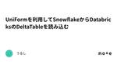
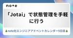
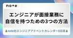
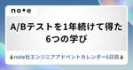
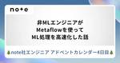
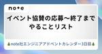

noteエンジニアチーム 公式マガジン
https://engineerteam.note.jp/m/m70da42dac8cf
noteエンジニアの技術記事をまとめたマガジン。さらに技術記事を読みたい方はこちら→ https://engineerteam.note.jp/
フィード

UniFormを利用してSnowflakeからDatabricksのDeltaTableを読み込む
noteエンジニアチーム 公式マガジン
本記事は、 Databricks Advent Calendar 2024 シリーズ2の10日目の記事です。UniFormを利用してSnowflakeからクエリするまでの簡単な流れを書いています。はじめに続きをみる
15時間前
CodeBuild-hosted GitHub Actions Runnerの設定例とTips
noteエンジニアチーム 公式マガジン
note株式会社のSREチームのショウゴです。本記事は、note株式会社 Advent Calendar 2024の10日目の記事です。noteのSREチームでは、今年サポートが発表されたCodeBuild-hosted GitHub Actions Runnerを検証・一部導入を行いました。導入したことにより、低コストでスケーラブルなGitHub Actionsの実行環境を確保することができました。続きをみる
5時間前

「Jotai」で状態管理を手軽に行う
noteエンジニアチーム 公式マガジン
最近業務外では React Native を使ったモバイルアプリ開発を行っています。React Nativeに関してはかなりブランクがあったため、開発を行うにあたり、あらためて最新の情報を色々とキャッチアップしました。その中で、状態管理ツールとして「Jotai」を選択し、実際に導入してみた感想です。「Jotai」を導入することで、ビューとロジックの分離がスムーズに進み、可読性・保守性が向上しました。※この記事はnote株式会社Advent Calendar 2024 9日目の記事です。他にも連日楽しい記事が公開されますので、ぜひご覧ください。続きをみる
1日前

エンジニアが面接業務に自信を持つための3つの方法 4
4
noteエンジニアチーム 公式マガジン
エンジニアとして働いていて、ある程度のチームマネジメントを任されてくると、エンジニア採用を人事や組織マネージャーから依頼されることがしばしばあります。 採用に関する書籍はこれまでにもいくつも発刊されており、学べることは多くあります。一方で、自分のやり方が本当に正しいのか、同僚や上長から教えてもらえるとは限りませんし、何度やっても自信が沸かないこともあるかもしれません。 今回は、面接業務の初心者が自信をつけるための3つの方法をご紹介します。※この記事はnote株式会社Advent Calendar 2024 8日目の記事です。連日楽しい記事が公開されますので、ぜひお読みください。続きをみる
2日前
iOS開発でClaude活用とその限界
noteエンジニアチーム 公式マガジン
ChatGPTの盛り上がりはちょっと冷ややかな目で見てたんですが、Claudeとの出会いで一気に生活の中に生成AIが入りこみました。今年の春頃、たまたま会社の集まりで「Claudeええで」「クロ……何？」「クロード」「クロード……」というやりとりがあって、今や毎日使うサービスとなったClaude。続きをみる
3日前

A/Bテストを1年続けて得た6つの学び 1
noteエンジニアチーム 公式マガジン
エンジニアのすのうちです。私の所属するチームでは、「ユーザーが興味のある記事に出会い、良い購入体験をできるようにする」ことを目的としています。続きをみる
4日前
Snowflake Cortex Analystを試してみた 1
noteエンジニアチーム 公式マガジン
※ この記事はnote株式会社 Advent Calendar 2024の5日目の記事です。noteでデータエンジニアのリーダーをやっています。久保田です。LLMが色々な業務を効率化しているこの昨今、データ活用周りでもたくさんのサービスが生まれています。その中でもやはり注目は、「SQLを書かずに、自然言語でデータの分析」という分野ではないでしょうか。続きをみる
5日前

非MLエンジニアがMetaflowを使ってML処理を高速化した話
noteエンジニアチーム 公式マガジン
noteで推薦チームのPM兼サーバサイドエンジニアをしている露木です。今回は非MLエンジニアである私がMetaflowを使ってML処理を高速化した話をします。詳細は後述しますが、440分かかっていた推薦記事リストの作成を120分まで短縮しました。(120分のうち80分はバッチ処理の待ち時間です)※ この記事はnote株式会社 Advent Calendar 2024の4日目の記事です。続きをみる
6日前
ゆるSRE勉強会 #8レポ in note place 1
noteエンジニアチーム 公式マガジン
note株式会社で技術広報をしているmegayaです。ゆるSRE勉強会 #8がnote placeにて開催されました。この記事では、当日のレポを簡単にまとめて紹介します。続きをみる
6日前

イベント協賛の応募〜終了までのやることリスト 2
noteエンジニアチーム 公式マガジン
技術広報として協賛イベントに関わることが多いのですが、やることがたくさんあり、「あれ？グッズって発注した？」「配送っていつまでだっけ？」といつも祭り状態になります。私はマルチタスク作業をすると毒状態になったかのように作業が遅くなるので、毎回周りに迷惑をかけてしまう。本当に申し訳ない…！ということで、自分自身のために「イベント協賛でやるべきこと」をまとめておこうと思いました。毒消し草を自分で準備しておこうと。続きをみる
7日前

CircleCIの時間を「さらに」半分にした話
noteエンジニアチーム 公式マガジン
こんにちはnote株式会社stabilityチームの小見です。この記事はnote株式会社 Advent Calendar 2024の2日目の記事です。以前noteでは、CircleCIを14分から6分まで短縮する施策が打たれました。詳細はこちらのGENDOSUさんの記事をご確認ください。しかし月日は流れ、依存関係の増加・テストの増加により再び11分30秒まで実行時間が伸びておりました。今回は11分30秒から4分30秒まで短縮した、実施内容をまとめて行きます。続きをみる
8日前
note入社エントリ： エンジニアから見たCEO加藤さんのすごさ
noteエンジニアチーム 公式マガジン
この記事は note株式会社 Advent Calendar 2024 の1日目の記事です。2024年10月にエンジニアとして note に入社した 濱田 裕太 (はまだ ゆうた) と申します。note 入社前に CEO の加藤さんと直接お話しする機会を頂けたのですが、そのときに「加藤さん、自分より全然エンジニアしてるじゃん...!!」という衝撃と興奮を受けました。そこで本記事では「note入社エントリ」として、そのときのエピソードと note 社の魅力について書こうと思います。続きをみる
8日前
Type-safe対応したComposeNavigationでActivityに遷移する
noteエンジニアチーム 公式マガジン
こんにちは、トリです。JetpackComposeに移行するとき、いろいろな理由でSingleActivityではないことは珍しくないと思います。JetpackNavigationやComposeNavigationでは、ナビゲーショングラフにActivityのデスティネーションを追加できます。 アクティビティのデスティネーション | Android Developersdeveloper.android.com 続きをみる
13日前
【12/10】プロダクトヒストリーカンファレンスのアフターパーティーをKINTOテクノロジーズ、アスエネ、note、X Mileの4社で開催！
noteエンジニアチーム 公式マガジン
KINTOテクノロジーズ、アスエネ、note、X Mileの4社合同にて、プロダクトヒストリーカンファレンス2024のアフターパーティーを12月10日(火) 19:30〜21:00に開催します。今回はプロダクトヒストリーカンファレンスを通じて得た学びや経験などなどを発表するLT大会を行います。各社のエンジニアに加えて、LT枠もありますので、ぜひご応募くださいませ。続きをみる
12日前
SwiftUIでテキストエディタ?
noteエンジニアチーム 公式マガジン
おはようございます。watura です。iOS noteアプリのエディタをよりよいものにできないものかと最近調べています。この記事は、調べてみたけど難しいねぇ。すぐできる気はぜんぜんしないね！という記事になります。続きをみる
14日前
趣味で作ったツールは200超え！楽をするために苦労するリーダーの働き方 - noteエンジニアインタビュー
noteエンジニアチーム 公式マガジン
今回のインタビューでは、noteでさまざまな役割を担うエンジニアの高橋元さんにお話を伺いました。Stabilityチームのリーダーとしてマネジメント業務もしつつ、エンジニアリング支援室とSEOチームにも所属し、多方面で活動しています。高橋さんの特筆すべき点は、趣味で作ったツールが200を超えることです。業務改善やツールづくりが好きであり、「縁の下の力持ち」を自称しています。そんなリーダーの働き方やキャリアについてお聞きしました。続きをみる
15日前
会社忘年会の企画で悩める人へ
noteエンジニアチーム 公式マガジン
11月になり2024年も残り2ヶ月を切ったところで、忘年会の予定が徐々に決まってきた人も多いのではと思いながら書き始めている。去年の今頃、社内忘年会の幹事をやることになって「コンテンツどうしよう」「景品あったほうがいいかな」「ご飯とお酒はどうしよう」みたいな悩みポイントがいっぱいあった。続きをみる
19日前
SwiftUIでルビをふる
noteエンジニアチーム 公式マガジン
おはようございます。waturaです。新しいmac miniがほしいなぁと思っているんですが，やっぱり、独立した画面ほしいよね。机の上にもう１セットキーボードとかおくのいやだよね。とかって考えると、ほしいのはノートパソコンでは？となっています。note Mobile Tech Talk #1で発表した内容になります。続きをみる
20日前
noteでのGrowthBookの導入理由と使い方を紹介
noteエンジニアチーム 公式マガジン
EMの佐々木です。note ではA/Bテストの改善目的でGrowthBookを導入し、まずは先行して一部のチームで利用を開始していました。続きをみる
21日前
開発の力で事業を支える！CTOが語るバリュー発揮事例
noteエンジニアチーム 公式マガジン
noteは1年で様々な機能開発がされていますが、社内の体験向上やクリエイターがよりより作品を生み出す施策など、様々な方向での施策を実践しています。自動テストの効率化やSEO戦略の強化、フロントエンドの刷新など、多岐にわたる取り組みが行われているのです。続きをみる
25日前
Bytebaseで実現するデータベース管理の効率化
noteエンジニアチーム 公式マガジン
noteのSREチームのショウゴです。noteではデータベースの管理ツールとしてBytebaseを導入しました。従来は複数のツールを組み合わせてデータベースに接続していたため、接続設定や管理に手間がかかっていました。Bytebaseの導入により、ツールを一元化し、データベースの接続・管理作業を効率化することができました続きをみる
1ヶ月前
SEO改善でクリック数2倍、クロール時間を1/30にした話
noteエンジニアチーム 公式マガジン
Stabilityチームリーダーの高橋 元です。私はStabilityチームとしてシステム稼働の安定性向上に務める傍らで、約1年ほど前からSEOチームとしても兼任で改善を続けてきました。続きをみる
1ヶ月前
【11/20】note Mobile Tech Talk #1を開催します！
noteエンジニアチーム 公式マガジン
note社のAppチームによるモバイルアプリエンジニアLTイベントを開催します。noteのiOS / Androidのアプリエンジニアが、最近興味を持った技術やトピックスをLT形式で発表いたします。イベントにはnoteのAppチームの全エンジニアが登壇予定です。続きをみる
1ヶ月前
noteのLLMワークフローを紹介します!!(構築/運用編)
noteエンジニアチーム 公式マガジン
こんにちは、note AI creativeの武藤です。※こちらの記事はnoteのLLMワークフロー紹介の後編です。前編として、LLMワークフローの「技術選定編」を書きました。前編記事はこちら。続きをみる
1ヶ月前
noteのLLMワークフローを紹介します!!(技術選定編)
noteエンジニアチーム 公式マガジン
こんにちは、note AI creativeの武藤です。noteは毎日数万件の規模でコンテンツが集まるプラットフォームなので「この観点でLLMを使って評価できないだろうか？」という要望が多くあります。例えば下記のような要望です。続きをみる
1ヶ月前
noteはAIフェスティバル 2024に協賛します
noteエンジニアチーム 公式マガジン
note株式会社は、2024年11月8日(金)〜2024年11月9日(土)に開催されるAIフェスティバル2024に協賛します。AIフェスティバル 2024概要続きをみる
1ヶ月前
noteに入社しました
noteエンジニアチーム 公式マガジン
こんにちは、小見と申します。 3ヶ月前にnote株式会社に入社しました。 自己紹介と一緒に、入社した理由、入社して感じたこと、社内外からベールに包まれているstabilityチームで何をしているのか書きたいと思います。自己紹介続きをみる
1ヶ月前
AIによる開発者体験の改善でわかったAI自動化の課題
noteエンジニアチーム 公式マガジン
note株式会社推薦チームの漆山です。推薦チームでは、開発プロセスの効率化と品質向上を目的に、AIを利用した自動レビューシステムの改善を続けています。続きをみる
1ヶ月前
noteはプロダクトヒストリーカンファレンス2024に協賛します
noteエンジニアチーム 公式マガジン
note株式会社は、2024年11月30日(土)に開催されるプロダクトヒストリーカンファレンス2024に協賛します。イベント当日は、CTOや開発リーダー、エンジニア、人事など様々なメンバーで参加します。ぜひブースに遊びに来てください。続きをみる
1ヶ月前
Kaigi on Rails 2024に参加してきました！
noteエンジニアチーム 公式マガジン
10/25(金)、26(土)に＠有明セントラルタワーホール & カンファレンス（東京）で行われたKaigi on Rails 2024に参加してきました。技術カンファレンスに参加する旨みは、普段の業務では触らない技術を知るきっかけになったり、他社事例を聞くことで自社システムへの理解が深まったりすることだと思います。続きをみる
1ヶ月前
noteの成長を支えるEMの働きと歩み - noteエンジニアインタビュー
noteエンジニアチーム 公式マガジン
今回のエンジニアインタビュー記事では、noteのエンジニアリングマネージャー（以下、EM）として働く海野さんに話を聞きました。2022年7月にEMとして入社し、エンジニア全体のサポートや採用業務、品質管理など多岐にわたる役割を現在も担っています。採用業務においては、人材像の明確化や選考フローの設計にも携わっています。続きをみる
2ヶ月前
【9/30】iOSDC & DroidKaigiのアフターパーティーをGO/note/令和トラベルで開催
noteエンジニアチーム 公式マガジン
GO株式会社・note株式会社・株式会社令和トラベルの3社合同にて、iOS＆Android向けにアフターパーティーを開催します。各社よりiOS/Androidエンジニア1名ずつ、合計6名がLTに登壇します。イベントを振り返りつつ、モバイルアプリ開発に関する知見を共有。続きをみる
3ヶ月前
noteはDroidKaigi 2024に協賛します
noteエンジニアチーム 公式マガジン
note株式会社は、2024年9月11日(水)〜13日(金)に開催されるDroidKaigi 2024にサポータースポンサーとして協賛をします。DroidKaigi 2024概要続きをみる
3ヶ月前
noteはKaigi on Rails 2024にシルバースポンサーで協賛
noteエンジニアチーム 公式マガジン
note株式会社は、2024年10月25日（金）〜 10月26日（土）に開催されるKaigi on Railsにシルバースポンサーで協賛をします。昨年に引き続き、スポンサーとしてRubyコミュニティの発展を後押ししていきます。Kaigi on Rails 2024概要続きをみる
3ヶ月前
Perplexity Proと作るアプリ開発
noteエンジニアチーム 公式マガジン
先日、レシピ・献立記録アプリ「レシレコ」をリリースしました。iOS版は以下のリンクからダウンロードできます。 レシレコ「レシレコ」はブラウザ・アプリの共有ボタンからレシピの登録ができるレシピ・献立記録アプリです。 レシピサイトにあるレシapps.apple.com 続きをみる
3ヶ月前
Ruby好きエンジニアが考えるリーダーとしての開発とマネジメント - noteエンジニアインタビュー
noteエンジニアチーム 公式マガジン
リーダー業務に携わると、マネジメントする時間が増え、コードが書ける時間が減ってしまうことがあります。技術者として「コードを書きたい」という想いがある人もいるかもしれません。noteで働くリーダーの場合、開発とマネジメントの役割をどのように考えているのでしょうか。Ruby好きエンジニアであり、開発チームのリーダーである小寺さんにお聞きしました。続きをみる
3ヶ月前
【9月25日】好きな言語で作る！低レイヤゆるっとLT大会- note / Liiga
noteエンジニアチーム 公式マガジン
普段使っているRubyやPHP、Goといったプログラミング言語を通じて、低レイヤー技術の楽しさを学べるイベントを開催します。初心者でも低レイヤを気軽に学べ、上級者でも知見が得られるイベントになる予定です。どなたでもぜひお気軽にご応募ください。また、今回のイベントではLT登壇者を3名募集しております。「RでJVMをつくった」「RubyでCPUをつくった」など、自分の開発をこの機会にぜひ発表してみてください。続きをみる
3ヶ月前
テスト用のオブジェクトを簡単に作れるFactoryJSというライブラリを作った
noteエンジニアチーム 公式マガジン
この記事は「TSKaigiサブイベント #1 フロントエンド」にて登壇した内容の文字起こしです TSKaigiサブイベント #1 フロントエンド (2024/08/06 19:00〜)# TSKaigiサブイベント #1 フロントエンド TSKaigiサブイベントは、TypeScriptコミュニティの活typescript-jpc.connpass.com 続きをみる
4ヶ月前
note placeを技術イベント向けにオープン化（1ヶ月の試験運用）
noteエンジニアチーム 公式マガジン
noteというサービスは、様々なエンジニアや技術コミュニティのみなさんとの協力によって成り立っています。この度、技術コミュニティへの還元とコミュニティのさらなる活性化を目指し、noteのイベントスペース「note place」を技術コミュニティへオープン化することを決定いたしました。今回の取り組みは、1ヶ月間の試験運用として9月1日〜9月30日での貸出を実施予定です。続きをみる
4ヶ月前
noteの10年もののメディア機能統一計画
noteエンジニアチーム 公式マガジン
こちらの記事は、note × マネーフォワード × 食べログ × STORES によるオフライン限定のイベントで行った「10年超えRails開発の振り返りと未来 - 持続可能な開発の具体策」での登壇資料を公開いたします。 【増枠】10年超えRails開発の振り返りと未来 - 持続可能な開発の具体策 (2024/08/01 19:00〜)# 📝概要 note × マネーフォワード × 食べログ × STORES 10年以上にわたりRailsでサービス開発pieceofcake.connpass.com 続きをみる
4ヶ月前
[コード公開] GAS x Zapier x LLMで今日のニュースを自動でサマリーする
noteエンジニアチーム 公式マガジン
こんにちは、note AI creativeの田中です。「今日話題になったAI系のニュースを自動でサマリーしてお知らせする仕組み」を作ったので作り方を解説します。Zapierの設定やGASのコードも可能な範囲で公開しています。続きをみる
4ヶ月前
ESLintからBiomeに移行しました
noteエンジニアチーム 公式マガジン
こんにちは。フロントエンドエンジニアのiemongです。noteで開発しているmonorepo環境のLinterをESLintからBiomeへほぼ移行しました。それについて共有します。移行のモチベーション続きをみる
4ヶ月前
Next.js + App RouterによるCMS機能開発の苦労と学び
noteエンジニアチーム 公式マガジン
開発チームの沼田です。Next.jsを用いて、note内に簡単にページが作れるCMS『サイト作成機能』をリリースしました。以下のように、採用や広報に向けたページを作ることができます。続きをみる
5ヶ月前
[コード公開] GASとOpenAI Visionでレシート管理を半自動化してみた。
noteエンジニアチーム 公式マガジン
こんにちは、note AI creativeの田中です。OpenAIのAPIには画像を解析できる「Vision」機能があることをご存知でしょうか。https://platform.openai.com/docs/guides/vision続きをみる
5ヶ月前
GrowthBookでA/Bテストの工数削減し、誰でもテストができる環境になった話
noteエンジニアチーム 公式マガジン
UX改善チームの甲斐です。私たちのチームでは、A/Bテストを実行しながらUX改善を行い、クリエイターの売上を伸ばすことを目標としています。続きをみる
5ヶ月前
Python＋Amazon Bedrockでプルリクの説明文とレビューをAIで自動生成
noteエンジニアチーム 公式マガジン
推薦チーム所属 MLエンジニアの漆山です。私たち推薦チームは2人体制と小規模であるため、開発においてのコミュニケーションを円滑にすることが大切です。そこで、AIによるプルリクの概要とコードレビューの自動化を行いました。続きをみる
5ヶ月前
noteの推薦チームの紹介 - 2024年版
noteエンジニアチーム 公式マガジン
推薦チームでエンジニア 兼 PMを担当している露木です。推薦システムの開発は難しいという印象を持つ人が多いかもしれません。そんな印象を変えるために、noteの推薦チームがどんな活動をしているのかを、この記事でわかりやすくお伝えしたいと思います。続きをみる
5ヶ月前
[コード公開] GAS & Zapierで、自分の作業可能時間を可視化してみる
noteエンジニアチーム 公式マガジン
note AI creativeの田中です。自分のGoogleカレンダーから作業可能時間を計算して、Slackに通知する仕組みを作ってみたので、作り方を解説してみます。続きをみる
5ヶ月前
【8月1日】10年超えのRails開発の知見を4社が語るイベントを開催 - note/マネフォ/STORES/食べログ
noteエンジニアチーム 公式マガジン
10年以上にわたりRailsでサービス運用を続けてきた各社のエンジニアが集まり、Railsにおけるサービス運用のコツや苦労、成功体験を共有するオフラインイベントを実施します。「長年続いているRailsサービスで開発するからこそ見えている世界」をお見せします。続きをみる
5ヶ月前